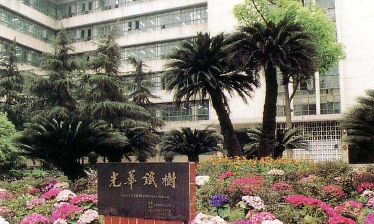

一、大学精神——经世济民，孜孜以求
“经世济民”，是中国古代圣贤对“经济”一词的理解。《抱朴子·审举》谓：“故披洪范而知箕子有经世之器，览九术而见范生怀治国之略。”《晋书·殷浩传简文（司马昱）答书》：“足下沈识淹长，思综通练，起而明之，足以经济。”可见，“经邦济世，强国富民”是历代中国有志向、有作为的知识分子的崇高思想境界，经济学应该是“经世济民”之学，充分体现经济学厚生、惠民的人文主义思想。“经世济民”，是以探求经济运行规律为己任的经济学人不懈追求的目标，它将个人的知识、能力奉献社会，将个人的成才抱负融入为最广大人民造福之中，这是社会进步需要的个体素质的完善与人格信念的升华。
“孜孜以求”，孜孜者，汲汲也，勤勉，不倦、不息也。《尚书·君陈》谓：“惟日孜孜，无敢逸豫”，形容每天不倦努力，不耽于安逸舒适。《资治通鉴·陈纪九》：“朝夕孜孜”。皆有孜孜不倦，执着刻苦，上下求索，自强不息，厚德载物，不贪图安逸享受的意思。
二、形象标识
1、校色
西南财经大学校色为蓝白二色，标准为：海蓝（C：100，M：50，Y：0；K：0）；纯白（C：0，M：0，Y：0；K：0），蓝色为主色，白色为辅色。校色意蕴如下：
蓝色：代表天空，象征浩瀚深邃；代表大海，象征开放包容；代表严谨，象征求是创新。
白色：代表清澈，象征淡泊明志；代表纯洁，象征学术神圣。代表清白，象征诚信廉洁。
蓝、白二色寓意西财人做人、做事、做学问的完美统一之追求。
2、校徽
西南财经大学校徽由核心图案、背景图样“S”及其中英文校名中西合璧而成。
背景图样“S”是西南财经大学英文校名的首字母，其图案也是前身院校之一的上海光华大学校名由来“日月光华，旦复旦兮”的视觉化表述，变体“S”寓意日月交替，循环往复。
核心图案有三层含义：
（一）造型取自古代布币，体现西南财经大学财经为主，经世济民、孜孜以求的办学特色；
（二）造型为顶天立地的“人”字形，寓意西南财经大学以人为本、以文化人的育人理念，以及师生大智为人、大气谋事、大爱行天下的境界追求。
（三）它是西南财经大学标志性建筑“光华楼”的抽象图形
三、优良传统
1、校训： “严谨、勤俭、求实、开拓”
严谨：《尔雅*释诂》严：敬也。《增韵》谨：毖也，专也，重也。严谨为治学第一要义。为学者在探究、传承、创新文化知识时，须以虔敬之心，博观约取，精益求精，养成严肃认真、谨慎严密的作风。
勤俭：明朝邱濬《大学衍义补》有“国家者亦本有无穷之财，但勤者得之、怠者失之，俭者裕之、奢者耗之。履祥谓《大学》此四语万世理财之大法。”西财历代师生勤俭治校，艰苦奋斗，当传承并永葆勤俭质朴、不尚奢华、理财报国的优良品质。
求实：做学问与做人、做事一样，均要以诚信为本，脚踏实地，立足现实，求真务实。要以理论知识为指导，注重掌握实务知识、实际本领与实战才干，经世致用，强国富民。
开拓：发展离不开前人的奠基和创业，更需要后人的传承与开拓。一个人、一个学校，要坚持自身的特色发展，更要与时俱进，追求卓越，锐意创新，不断赋予其新的生命力。
2、校歌
四、光华路名

公学路：这一路名是为了纪念西南财经大学的前身院校之一中国公学。中国公学是中国最早的一批大学之一，1906年创立于上海，
孙中山、
黄克强、
宋教仁、
蔡元培、
马君武、
杨杏佛、
于右任等曾任校董，第一批学生中有著名学者胡适。中国公学不但历史悠久，而且具有光荣的革命传统，师生中有不少人积极参加革命活动，如女英雄秋瑾，黄花岗七十二烈士之一的谬德潘等。中国公学于1951年与正阳法商学院等合并为重庆财经学院，次年并入西南革大，1953年随西南革大三处并入四川财经学院。
求精路：这一路名是为了纪念西南财经大学的前身院校之一求精商学院。私立求精商学院原名私立求精商业专科学院，创立于1940年，校址在重庆市曾家岩。1947年，商业专科学校升为商学院，由美国教会所办，各级负责人均为留美学者，学院实行美式教育，从成立到结束，共毕业学生十届。学院在1952并入西南革大，1953年随西南革大三处并入四川财经学院。
正阳路：这一路名是为了纪念西南财经大学的前身院校之一正阳法商学院。其前身为创建于1946年的重庆朝阳学院，1949年更名为私立重庆正阳法商学院，位于重庆解放东路。当时的院长、院董事长均由国民政府司法院院长居正兼任，副院长由国民政府司法行政部次长、最高法院院长夏勤担任。聘有陈豹隐、潘大连、刘觉民等国内知名人士作教授。学院在1951与中国公学、相辉文法学院合并为重庆财经学院，后并入西南革大，1953年又随西南革大三处并入四川财经学院。
相辉路： 这一路名是为了纪念西南财经大学的前身院校之一相辉文法学院。该学院创建于1946年8月，位于重庆北碚，创办时拟办为复旦大学重庆分校，校名取自复旦大学创始人，原校长马相伯、李登辉两位老先生。著名红学家吴宓、文学家徐德庵等曾作学院教授。学院在1951与中国公学、正阳法商学院合并为重庆财经学院，后并入西南革大，1953年又随西南革大三处并入四川财经学院。
革大路：这一路名是为了纪念西南财经大学的前身院校之一西南革命大学。西南革命大学成立于1950年，校长、副校长分别由刘伯承、张子意兼任，总校设在重庆，先后招收学员2万余人。西南革命大学设四个处，三处由部分财经系科合并而成，直接管理财政、贸易、经济计划、工厂管理四个系及财政、会计两个专修科。三处各系科一共办了两期，1953年调入四川财经学院。
华西路： 这一路名是为了纪念西南财经大学的前身院校之一华西大学。华西大学是华西协合大学的简称，位于成都华西坝，筹建于1905年，1910年正式招生。1937年在社会历史系建立经济学组，招收经济学专业学生，以后由于要求入学的人数逐年增加，1940年正式成立经济系，从1941至1952年共毕业学生392人。1952华西大学经济系调入四川财经学院。
光华南（北）路：这一路名是为了纪念西南财经大学的前身院校之一光华大学。上海光华大学创建于1925年6月，由数百名脱离美国教会学校上海圣约翰大学的爱国师生组建而成。校名取之于古诗《卿云歌》“日月光华，旦复旦兮”句，体现了创办者复兴中华、反对列强的宏愿和光大中华民族的精神。抗战期间光华大学在四川成都设立分部，抗战胜利后，光华大学本部复校。成都分部交四川省地方接办，变更为“私立成华大学”，1952年9月并入四川财经学院。
成华路： 这一路名是为了纪念西南财经大学的前身院校之一成华大学。1937年8月13日日本军队进攻上海，抗日战争全面爆发，光华大学张寿镛校长鉴于抗战非短期内可以结束，与校董会商定，入川设立分校。分校于1938年3月1日正式开学，校名定为“私立光华大学成都分部”。1939年学校由市内王家坝校址迁到西郊草堂寺迤西，此地因光华大学成都分部的迁入而得名“光华村”。抗战胜利后，光华大学本部复校，成都分部交四川省地方接办。变更为“私立成华大学”，1952年9月并入四川财经学院。
金沙路：金沙路得名于西南财经大学所在地紧临的金沙遗址。金沙遗址位于成都市西郊苏坡乡金沙村。遗址所清理出的珍贵文物多达千余件，绝大部分约为商代晚期和西周早期，少部分为春秋时期。金沙遗址的性质，目前推测有可能属于祭祀遗迹，也可能是商末至西周时期成都地区的政治、文化中心。遗址出土的文化表明，金沙文化不是孤立的，它与黄河流域文化和长江下游的良渚文化有深刻的内在联系，再次证明了中华文化的多元一体。
住友路：住友路得名于紧临该路的住友苑宾馆。住友苑宾馆是西南财经大学的对外合作项目之一，部分建设资金由日本住友海上保险公司投入。日本住友海上保险公司从1998年起每年与该校联合举办一次“住友海上---西南财经大学研讨会”，邀请国内外保险公司、保险监管机构及保险教育界同行参加。

五、光华铁树
学校光华校区明德楼前耸立着一株挺拔的铁树，它有着一段不寻常的历史。光华铁树是1939年，由当时光华大学成都分部的师生们种下的。那一年，正值抗日战争时期，为了表达对抗战胜利的渴望，校长谢霖带领师生们筹资买来了一棵双株的铁树幼苗在校园内种下。这株铁树树形奇特，为“V”型，师生们以此来象征对抗战胜利的祝愿。
铁树从此屹立在光华园中，默默地见证了光华园数十载的发展历程。铁树，渐渐成为了光华人坚忍不拔、不屈不挠、勇于拼搏精神的象征，成为了光华师生爱国情怀的写照。因此，此树被命名为“光华铁树”
返回开头